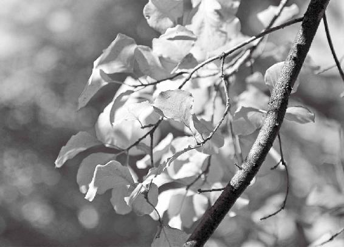
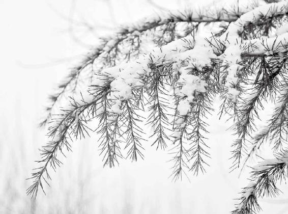

西方、白色是与我们的肺系统有感应的
肺有毛病，会体现在鼻子上
肺的精华藏在肺臟，出现问题会体现在背部
身体进了风寒、湿气，吃辛味的东西可以散出去
肺在五行中属金
滋补肺的肉当属马肉
大米入肺，滋阴润燥，可以补肺气
金星的变化会影响到人的肺、大肠、皮毛等功能
人的肺系统有问题，就会反映在皮和毛上
听发re音的歌曲能养肺
如果你肺气弱，就多选用“四”和“九”的数字
腥味能提高、补益人的肺气
经文：
西方白色，入通于肺，开窍于鼻，藏精于肺。故病在背。其味辛，其类金。其畜马。其榖稻。其应四时，上为太白星。是以知病之在皮毛也。其音商。其数九。其臭腥。
西方、白色是与我们的肺系统有感应的
梁冬： “西方白色，入通于肺”，怎么解释？
徐文兵：把“中”定了以后，就知道西方指哪儿。“中”是指中原地区。西方就是中原地区往西，相当于现在的甘肃、陕西、新疆、青海这一带。
梁冬：美国，算西方还是东方？
徐文兵：当然算西方了。地球是圆，以谁为坐标？朝鲜为什么叫“朝鲜”？“朝”，就是朝（zhao），是朝（zhao）日新鲜的意思，它在我们的东面。日本呢，据考证,它的名字来源于唐朝，那会儿,中国皇帝对日本人说：“你们是从日出的地方来的人。”就是太阳从那儿升起。这个“本”是树干，不是根。日本也在我们的东边。这就是我们的定位。西方人把我们叫远东，他们也承认自己在西方。西方白色，西方人都是白色人种。
梁冬：所以西方人结婚要穿白婚纱，那个时候中国人就不能穿白婚纱！
徐文兵：中国人把白色当丧服。现在都乱了！以中原地区为中，中原地区的西边，我们定为西方。跟西方能产生和谐共振的那个颜色，是白色。
跟西方能产生和谐共振的那个颜色，是白色。
梁冬：光谱也是有波长的吧？
徐文兵：有波长，振动频率不一样。我们经常说，“东方青龙”，“西方白虎”。 “青龙”“白虎”都跟星象有关系。
“二月二，龙抬头”的时候，是指东方代表青龙的星象刚刚露头儿。西方白虎也指星象。我们到故宫参观的时候，从午门进去以后，左边是“青龙”，右边是“白虎”，后面叫“玄武”。唐代在西安有个“玄武门之变”，就是李世民篡党夺权，把兄弟杀了，自个儿当皇帝。故宫北边的门也叫玄武门。后来因为康熙避讳（康熙叫“玄烨”） “玄”字，就改成了 “神武门”。
“玄”与“神”、“空”、“黑”，都是一个意思。在神武门往北一看，就是景山；再往西北看，就是北海，就是这么一个方位。所以， “白色”对应到“西方”，它能感染、能收受，或者是呼应到我们内在的肺的系统，叫“入通于肺”。
梁冬：如果人的肺不好的话，就要往西走，穿白色的衣服。
“白色”对应到“西方”，它能感染、能收受，或者是呼应到我们内在的肺的系统，叫“入通于肺”。如果人的肺不好的话，就要往西走，穿白色的衣服。
肺有毛病，会体现在鼻子上
梁冬：“开窍于鼻”是什么意思呢?
徐文兵：“开窍于鼻”，就是说，肺你看不到，但肺连通外界，跟天气、外界沟通的窍道是鼻子。也就是说，肺有毛病会体现在鼻子上。鼻子如果吸入了一些不干不净，或者是六淫的邪气，就会先伤鼻、后伤肺。
鼻子如果吸入了一些不干不净，或者是六淫的邪气，就会先伤鼻，后伤肺。
感冒的早期症状就是鼻塞——鼻子突然不通气了。有的人的表现是鼻孔轮流不通气——一会儿左鼻孔不通、一会儿右鼻孔不通。
因为人的器官是交替工作、交替休息的，鼻孔也是这样。平常我们鼻子没堵的时候，也是一边强，一边弱。你如果把某个鼻孔堵住以后，再呼吸就有点费劲。打开那个鼻孔的时候，就会顺畅。
人的身体变化，对应的时间，都有个交替，它是换班、轮岗的。所以，一个人感冒之后，首先表现的就是鼻子出问题，有的人鼻子痒、打喷嚏；有的人流清鼻涕，流清水。
梁冬：有些时候，我的鼻头会很痒，这是什么原因呢？
徐文兵：鼻头很痒是过敏了！但是它的根儿在哪儿，它的物质基础在哪儿？“藏精于肺”——它内在的根据地在肺。
看相不要相信形，要看形背后的能量
梁冬：古代的面相书说，一个人的鼻根高比较好，因为可以通天地之气。从中医的角度来看，鼻梁比较高意味着什么？
徐文兵：中国人在重视“形”的意义上，更重视 “气”。就是说，形状大小不重要，功能才重要。有的人鼻子、鼻孔很大，未必就呼吸顺畅；有的人鼻孔不大，未必整天堵鼻子。
所以，我们要重视形和气的关系。所谓有形无气，就是说，这个人来上班了，人到了，但是他整天想家里的事儿，或者说炒股票，上QQ聊天，这叫有形无气——人来了，功能没发挥。所以，鼻根高或者鼻孔大并不重要，还是要看功能。
相面也好，相人也好，或者看风水也好，真正的高手都是看功能。看背后的神气或者神韵，而不是看外在的形。现在人都是拿肉眼凡胎看形：一看这个地儿不错，这条山“青龙”，那条“白虎”，前面还有一条河，后面怎么怎么着……这都是瞎扯。千百年来没地震，地表的形没变，为什么风水会变？所以形背后的能量更重要！
相面也好，相人也好，或者看风水也好，真正的高手都是看功能。看背后的神气或者神韵，而不是看外在的形。
肺的精华藏在肺臟，出现问题会体现在背部
梁冬：“藏精于肺”,《黄帝内经》谈到 “臟”，会说“藏精于脾” “藏精于心”等等。所谓“藏精于肺”，怎么解释呢？
徐文兵：“六腑”是“传化物而不藏”，“五臟”是 “藏精气而不泄也”。“藏”和“臟”是一个字，就是把我们最宝贵的东西封藏在里面。
梁冬： “故病在背”怎么解释呢？
徐文兵：为什么“病在背”？
梁冬：肺出现问题的话，会在背上体现出来——“故病在背”。
徐文兵：我讲站立姿势的时候说过，人的后背有两个肩胛骨。肩胛骨应该是平的，或者是圆的，能把后背盖住、罩住。现在的人老是挺胸抬头，把自己变成半个鸡胸——胸挺出来，然后后背凹进去，肩胛骨翘起来。这样做，人特别容易得肺的疾病，因为后背那儿，就是平第二胸椎那个棘突下旁开一点五寸有个穴位叫“肺腧”——肺的气从那儿输到体表。“肺藏魄”，肺腧边上再旁开一点五寸，就在肩胛骨边儿上，是第二膀胱经经过的路线，这里有个穴位，就是我们说的“魄户”——魂魄的“魄”。
现在的人老是挺胸抬头，把自己变成半个鸡胸——胸挺出来，然后后背凹进去，肩胛骨翘起来。这样做，人特别容易得肺的疾病。
我们经常说，“要练出一个健强的体魄”，当你睡觉了以后，“魂”休息了，“魄”还在工作。最大的一个体现就是，如果一个人的肺受伤了以后， “魄”就会受影响，所以很多人在睡觉中会被憋着打呼噜……这都是魄的问题。
梁冬：我以为是喉咙或者里面那个小舌头的原因？
徐文兵：为什么那个小舌头白天不堵你，非要到晚上堵？这就是控制它背后的气有问题。控制背后那个气的就是 “魄”。
什么是“魂魄”？白天叫“神”，到了晚上，分两拔儿：一拔儿休息叫“魂”，藏在肝里面。还有一个在继续工作，维持呼吸，这个就是“魄”。
什么是“魂魄”？白天叫“神”，到了晚上，分两拔儿：一拔儿休息叫“魂”，藏在肝里面。还有一个在继续工作，维持呼吸，这个就是“魄”。
所以，背受伤以后，第一，气会沿着肺腧伤害到你的肺里面。你的魄户本来是关着的、挺好的，你给它打开，会伤到你的体魄。这个肺腧上面，就是肺腧第三胸椎棘突下，旁开第二胸椎棘突下旁开1.5寸有个“门穴”，叫“风门”。
你老这么站着的话，风又会从“风门”穴进去，一进去，人就开始过敏，出现皮肤发痒，然后发咳——是咳，不是嗽。
梁冬：咳和嗽有什么区别呀？
徐文兵：一个人把气管里边的痰液、粘液排出来，叫咳；把胃里面、食道里面的粘液排出来，叫嗽。所以，咳是肺有问题，嗽是脾胃有问题，确切地说是胃有问题。好多人找我看病说:“徐大夫，我咳嗽好长时间了。”
我说：“你是咳呢？还是嗽呢？”这不一样！
梁冬：现在很多女青年喜欢穿露背装，后背耸出一个特别性感的肩胛骨，翘翘的。有的人因为参加什么活动，还穿身晚礼服，整个上半身全露了，这样穿衣很容易伤到肺。
身体进了风寒、湿气，吃辛味的东西可以散出去
梁冬：“其味辛”是什么意思呢？
徐文兵：好多人出现了肩背的问题，或者是症状。包括伏案工作的人，出现了颈肩综合症，动不动肩背就疼，这些从根儿上捯，就是伤到了肺，还跟吸入了很多冷的空气有关系。那么，已经吸入了这种风和寒，或者湿气，怎么办？应该把它散出来。
梁冬：怎么散呢？
徐文兵：“其味辛”——吃一些辛辣、辛热、辛温，或者辛凉的药，把进去的气散出来。
受风以后的人的感觉就是痒。风“善行数变”，在身体里面四处游走，人就会出现痒，这就是我们现在说的过敏。
风“善行数变”，在身体里面四处游走，人就会出现痒，这就是我们现在说的过敏。
梁冬：痒这个东西到底是什么？
徐文兵： “诸痛痒疮皆属于心”，痒是一种主观感觉，但是又达不到疼和痛的级别，是一种撩拨的感觉——拿个小羽毛撩拨你，这种感觉叫痒——其实就是一种轻度的风袭。
梁冬： 什么东西是辛的呢？
徐文兵：薄荷、肉桂、麻黄、细辛。
梁冬： “麻黄附子细辛汤”是《伤寒论》里面很著名的汤剂。
徐文兵： “麻黄附子细辛汤”是调治少阴病和“但欲寐”——一天到晚都是迷迷糊糊、没精打采醒不来的。辛味的药有一种宣散的作用。中医方子里面有很多调治这种受风感冒，风热、风寒的药，用的都是辛温，或者清凉解表的药，都有从里透达皮毛的效果。
肺主呼吸、主人的皮毛，皮表也是有呼吸功能的——把它散出去，腠理开放，把邪气赶走，就要吃辛味的。
肺主呼吸、主人的皮毛，皮表也是有呼吸功能的——把它散出去，腠理开放，把邪气赶走，就要吃辛味的。
梁冬：所以，理论上来说，有些人把鼻子堵住了不呼吸，也是能够维持生存的哟？
徐文兵：对！我听说，某些人能够在水下闭关好长时间。
梁冬：他在水里面，皮肤也不能呼吸，怎么能够坚持很长时间呢？
徐文兵：水里面也有氧气呀！鱼在水里面怎么能活着呢？我认为，人就是从水里面来的——海洋是万物之源。有几个证据，第一，人的体毛比较少；第二，人有泪腺。泪腺其实就是人体排除多余盐分的一条途径。海洋里边有很多哺乳动物都有泪腺，如海豚等。所以，我认为，人是从海里过来的。
梁冬：还有一个证据，就是人在胎盘里时，都是在水里呼吸。
徐文兵：对，羊水嘛，一个人的胚胎发育过程，就重复了人类进化的一段历史。一开始像个小蝌蚪，后来像条小鱼，最后像头小猪……
肺在五行中属金
梁冬： “其类金”作何解释？
徐文兵：这是我们五臟的五行分类——肝是木，心是火，脾是土，肺是金，肾是水。补充一点，我们经常戴个玉镯子，这个“玉”属于金玉一类的，就是所谓的“金玉良缘”，温润如玉。
从地域上来讲，西方不是皇天后土，而是戈壁沙漠比较多。所以，那里不是一个出产粮食庄稼的好地方，那儿的水土跟中原的水土是完全不一样的。但是，西方的矿产和玉是最好的。
从地域上来讲，西方不是“皇天后土”，而是戈壁沙漠比较多，所以，那里不是一个出产粮食庄稼的好地方。
梁冬：新疆出产 “和田玉”，这个跟地域有关系。
滋补肺的肉当属马肉
梁冬：“其畜马”，奇怪了，之前不是说马属热吗？火马，午马。为什么在这里是“其畜马”了呢？
徐文兵：《黄帝内经》是“黄帝学派”的集大成书，中间各章节会有差异。在有的章节里边，说的就是“其畜狗”。我体会了一下，补益我们肺的这些食物，不管是动物或者是植物，都有一种润燥的功能。秋天，秋高气爽，爽过头了就变成干燥了。但是，老天爷是平衡的，到秋天就会出产很多丰富的好东西——水果，然后让你可以滋阴润燥。
补益我们肺的这些食物，不管是动物或者是植物，都有一种润燥的功能。
所以，我认为，《黄帝内经》说的 “马”，就是比较合适的，它有一种润燥的功能。你要是把它变成狗，狗可是特别升阳动火的一种动物,特别热。
补益肺和肾的那些食材都偏凉。马肉偏酸、偏寒。你如果没吃过马肉，到内蒙肯定喝过马奶子酒。你喝羊奶会上火，喝马奶子酒就不上火。
吃过驴肉的人一定知道有一味著名中药——阿胶，滋阴润燥的效果特别好。而且它用的水特别讲究，用的是东阿古井里面的水。这种井水极其阴寒，而且里边含的矿物质特别多，矿物质多说明水沉，属金。所以阿胶的滋阴补血效果特别好。
梁冬：滋阴又怎么补血呢？按道理来说，应该是阳气补血啊？
徐文兵：如果血的容量不够，是气不够，还是血不够？如果血的动力不足了，它不流动了，这是气不够。如果本身血管一按下去是空的，就说明血容量不足，这叫“阴不足”；血不运动，这叫“阳不足”，需要分清楚。
如果血的动力不足了，它不流动了，这是气不够。如果本身血管一按下去是空的，就说明血容量不足，这叫“阴不足”。血不运动，这叫“阳不足”，需要分清楚。
比如泡茶，《茶经》里边说水——山泉水最佳，井水最次。因为井水太沉！煲汤炖肉用井水特别好。如果是泡茶，想把那个茶的馨香（茶叶是得肝气的精），把那茶气泡出来，用井水的话，任你烧开到100℃都没用。我们中国人研究水，不光看水里边含有什么物质，还要看水气。所以，用山泉水——山上，“咕嘟”“咕嘟”从地上冒出来那个水泡茶最好。

秋天，秋高气爽，爽过了头就变成干燥了。
大米入肺，滋阴润燥，可以补肺气
吃素的人怎么补肺
梁冬： “其榖稻”是什么意思呢?
徐文兵：滋补肺的动物，或者是肉类，我们说了马、驴，或者阿胶。那么，碰到一个吃素的人想补肺、益肺，吃什么？难道是吃麦子吗？不是！吃黍子、吃小米吗？不对！这些都偏温，麦子偏热，黍子偏热，小米偏温，你想润燥，吃这些就不合适了。那吃什么呀？“其榖稻”——磨出来的，就是我们现在吃的大米、糯米。
梁冬：有些朋友肝不是很好，是否就应该少吃点大米，多吃点小米什么的？
徐文兵：肝不好的人，要看他的肝是虚是实？是寒是热？我们讲过，如果他是肝气虚、寒，就吃小麦；如果他有实火、实热，就吃荞麦。根据他的寒热、虚实来用不同的麦子。
如果他是肝气虚、寒，就吃小麦；如果他有实火、实热，就吃荞麦。根据他的寒热、虚实来用不同的麦子。
“其榖稻”就是说，大米能够入肺，能够滋阴润燥，能补肺气。比如吃小麦做的馒头，嚼一嚼，觉得是甜的。而吃大米，除了甜以外，还能体会到一种酸的味道。
梁冬：生活需要慢慢品味呀！坦白地说，我觉得绝大部分的人不会慢慢去吃大米，是吧？
徐文兵：大米嚼一嚼是酸的。所以，南方人酿酒、做醋，都是用大米。因为大米含蛋白质偏少，含糖、淀粉偏多。所以跟麦子、黍子、小米来对比，大米还是偏凉的，尤其是水稻，当然也有旱稻。水稻生性就更凉，而它的滋阴、润燥、补肺的功能就会更强，所以，老天爷正好平衡了——南方热，就出产大米。
北方人最好少吃大米
徐文兵：北方人最好少吃大米。我们上大学的时候，南方的同学一吃那个馒头、面条，便觉得吃不下去，发硬。我们北方人到南方吃人家的大米，吃几顿以后，便觉得受不了，开始胃酸。这就是说，一方水土养成了你这种消化食物的功能状态，突然变换水土，你就会适应不了。
一方水土养成了你这种消化食物的功能状态，突然变换水土，你就会适应不了。
所以，北方人想吃大米又不想胃酸的话，就要想办法。第一，平衡它的寒性；第二，平衡它的酸性。这就要加一些辛温的东西。我看到南方很多人，焖米饭的时候，里面要加上香料，加一些桂皮。有的时候，有些人家还要加点孜然、小茴香、紫苏叶等辛温芳香的东西。我去巴基斯坦的时候，我发现当地人也吃大米。他们吃的大米，就是那种不粘的大米——一粒儿一粒的，互不黏连，是独立守神的大米。他们也在里面加香料。土耳其的一些朋友，米饭里边有时候还要加那种比较贵的藏红花，这些都是辛温的。这样吃大米的话，保证你不会胃酸。
梁冬：印度人会在米饭里加上咖喱，咖喱其实是各种香料粉磨在一起的。
徐文兵：到印度闻那咖喱味，真让你受不了。天气又热。
梁冬：人家到中国，还觉得没咖喱味受不了呢！
徐文兵：实在加不了香料，你就吃炒米饭。把大米饭过一下油，一炒，这时候你吃了就不会胃酸。所以，北方人想适应南方的生活，服水土得服一阵儿，南方人到北方也一样。
把大米饭过一下油，一炒，这时候你吃了就不会胃酸。

水土相服需要时间。
吃什么并不重要，怎么嚼怎么咽却很重要
梁冬：有些时候我觉得在北方生活时间长了以后，晚上应该经常吃点馒头，现在我几乎很少见到大家晚上在家里面吃饭的时候吃馒头下菜的，是吧？
徐文兵：因为米饭容易做嘛。我后来觉得，你别从化学成分上研究食物，吃饭这个动作就会直接影响到你的消化。
梁冬：此话怎讲？
徐文兵：你吃馒头嚼得多，还是吃米饭嚼得多？
梁冬：馒头嚼得多一点儿。
徐文兵：因为米饭本身就是颗粒。扒拉扒拉一放嘴里，一搅和就咽了，馒头你得细嚼。我突然发现，吃惯米饭的人，省略了这个咀嚼的功能以后，吃进东西就不好消化。我小时候吃馒头，啪一下把馒头拍扁了再吃。我的同学就说，“你要吃饼呀？”
馒头是虚囊的，一口咬下去，就会把嘴闪一下。把馒头拍扁，好像有种踏实、有着落的感觉。所以吃饭嚼多少下，嚼不嚼，都会影响到你的消化。现在人吃饭，都跟喂猪一样，呼噜呼噜就吃进去了。
对于这个嚼，我们说要细嚼慢咽。其实，吃什么并不重要，怎么嚼怎么咽却很重要。
对于这个嚼，我们说要细嚼慢咽。其实，吃什么并不重要，怎么嚼怎么咽却很重要。
梁冬：以前我们在学校读书的时候，有些西藏的朋友吃馒头，都拿在手上捏一捏，捏很紧了以后才吃。
徐文兵：现在，有些地方能种两季稻，甚至三季稻，但是，土地的营养就那么多，真正种这么几季稻出来的大米，口感、营养都比较差。
梁冬：所以，小孩子不要发育太早。一下子发育成熟了，吸收天地能量的时间就不够了。
徐文兵：光追求亩产量，不重视产出的种子的质量，我觉得也是个不好的趋势。
金星的变化会影响到人的肺、大肠、皮毛等功能
梁冬： “其应四时，上为太白星”什么意思？
徐文兵： “太白金星”太有名了。为什么有名？咱们都知道《大闹天宫》里，太白金星奉玉帝之旨，下凡招安孙悟空，封孙悟空当了个“弼马温”。
梁冬：所以，太白星就是金星。
徐文兵：对。金星的变化运行会影响到人的肺、大肠、皮毛的功能，甚至会影响到水稻的产量。
金星的变化运行会影响到人的肺、大肠、皮毛的功能，甚至会影响到水稻的产量。
梁冬：就是说，从中医的五运六气来讲，金气太过，水稻收成就好吗？
徐文兵：金气太过，稻子就会好，麦子就会差。这是我们的推论，对不对呢，大家可以去实践。
人的肺系统有问题，就会反映在皮和毛上
梁冬：“是以知病之在皮毛也”是什么意思呢？
徐文兵：前面，我们说过“脾胃病在肉”。“肺主皮毛”——人的肺系统出了疾病，就会反映在皮和毛上。
梁冬：这个毛，特指什么毛？
徐文兵：我个人理解，包括所有的毛，还有发。狭义的理解，就是指人的汗毛。“皮之不存，毛将焉附”，如果肺出问题了，表现在体毛上，就是人会脱发，还包括一些腋毛、阴毛，都会脱落。
“皮之不存，毛将焉附”，如果肺出问题了，表现在体毛上，就是人会脱发，还包括一些腋毛、阴毛，都会脱落。
梁冬：有些女子就是“白虎星”，说的是不是这个？
徐文兵：不是，那是天生的。有种叫“席汉氏病”的，就是女性产后流失大量的血液，伤到了精气，就会出现阴毛、腋毛脱落，卵巢萎缩，这是一种病。
梁冬：有一些人的腋毛长得不多，是不是不健康呀？
腋毛不多，一个是肺的问题，另一个是心的问题。
徐文兵：腋毛不多，一个是肺的问题，另一个是心的问题。我看到有些人乱服发汗药——阿斯匹林，有人说，防止血栓形成，就整天吃阿斯匹林。
《伤寒论》中提到，人要发汗了，叫 “遍身漐漐微似有汗者益佳,不可令如水流漓”。最好不要出太多汗，因为 “汗为心之液”，你出汗太多，会伤到体液、伤到心、伤到肾。可是有些人老吃阿斯匹林，就会闹得腋毛开始变枯、变黄，最后全部脱落。
中医认为，所有的皮肤病，根儿都在肺上
徐文兵：中医认为，所有的皮肤病，根儿都在肺上。我最近调治了一例牛皮癣。这位牛皮癣患者来找我，我问他：“你怎么知道我能调治牛皮癣？”
中医认为，所有的皮肤病，根儿都在肺上。
他说：“徐大夫，我不是让您来治我病的。我是听您的广播说，人受了寒凉刺激以后会出现很多奇怪的病。”
我说：“那你受什么刺激了？”
他说：“我跟工厂的朋友们打赌，说我能洗冷水澡。结果有一天，我正冲热水澡的时候，来了一个家伙，弄了一盆冷水，哗啦就泼在了我背上……”
他在热的时候，忽然一下受了凉，当时一口气提起来就没放下去。二十多年后，他还有这个毛病，就是老吸半口气。
他问我：“我是不是被激着了？”
我说：“你肯定就是被激着了啊！”
既然知道这个病由，就是皮肤出的问题，肯定是“形寒饮冷”伤到了肺，然后出现这么个病。
当时，我没按皮肤病调治，就按他本身是热，突然受了冷来治疗，具体通过扎针的办法给他做调治。扎针以后，他觉得背热了，而且平常都不出汗，现在有点出汗了。经过慢慢调治，他原来特别厚的皮肤开始变薄了，这说明皮毛的功能开始恢复了，邪气在退。
所以，看似是皮毛的小问题，其实从根儿上说是肺的问题。肺的问题就表现在这位患者总是吸半口气——外面受刺激影响到他的呼吸功能，本来一呼一吸很正常，他老捯半口气儿，老在那儿好像下不去。这就是影响到肺了。
看似是皮毛的小问题，其实从根儿上说是肺的问题。
人的呼吸就好像一个泵一样，不停地把体液输送到体表，如果这一功能被破坏了，末梢会出现病变。等一个人的肺恢复到正常工作的节奏以后，那些健康的营养液就能到达末梢。然后，那些污浊的废液也能被回收，这个人的皮肤就会变得光泽，恢复到正常。
人的呼吸就好像一个泵一样，不停地把体液输送到体表，如果这一功能被破坏了，末梢会出现病变。
梁冬：重庆的女娃子个个皮肤都很好，据说是因为吃辣椒吃的，有道理吗？
徐文兵：重庆是火炉，还是三条江的汇合之处，湿气很大的。如果在一个湿气不大的地方像重庆人一样吃辣椒，然后围着火锅流汗，那绝对要出问题。所以，一定要因时、因地、因人制宜。不能说人家吃辣椒，你也吃。人家吃了辣椒，皮肤光鲜；你吃了辣椒就会满嘴起泡，脸上还长包儿。
听发re音的歌曲能养肺
梁冬： “其音商”就是“宫、商、角、徵、羽”的“商”。
徐文兵：是1、2、3、5、6的哪个？
梁冬：是re（2）。
徐文兵：中医经络上有很多穴位的命名，都跟“商”有关系。比如说，手太阴肺经有11个穴，就是起于中腑，从胸走到手，它的末端在我们手大拇指的内侧指甲的边角上。手太阴肺经的第11个穴叫“少商”。少商，好像是比 “商”稍微低半个音阶，但还是“商”调。因为do、re、mi、fa、so、la、xi是七个音，我们才五个音，不够，所以有个“少商”。还有，手阳明大肠经有21个穴，它的第1个穴叫“商阳”。商阳在食指的指甲边上，是大肠经的第1个穴。这些穴位都跟“商”有关，跟肺有关，跟金有关，跟re这个调子有关。
手阳明大肠经有21个穴，这些穴位都跟“商”有关，跟肺有关，跟金有关，跟re这个调子有关。
如果你肺气弱，就多选用“四”和“九”的数字
梁冬： “其数九”如何解释？
徐文兵：“四”、“九”都跟肺有关。如果你肺气弱，就选“四”和“九”。
梁冬：每一个东西，真的是与全息宇宙统一，跟数字、音阶等都有关系。
每一个东西，真的是与全息宇宙统一，跟数字、音阶等都有关系。
徐文兵：关键是这些都是我们的先人“悟”到的，“智”是靠意识，有些东西是用意识解释不了，是靠“慧”解决的。
梁冬：我们前面讲到三和八有关系，现在看来四和九也有关系。
徐文兵：“五”和“〇”、“五”和“十”、“六”和“一”都有关系。
腥味能提高、补益人的肺气
梁冬： 什么是“其臭腥”？
徐文兵：什么味是腥的？鱼腥味。写《汤液经法》的那个真人、那个厨子，叫伊尹。伊尹做了一顿特别好吃的饭，汤王吃得很有滋味，便问伊尹：“为什么你的饭做得那么好？”这一典故，《吕氏春秋》和《淮南子》里面都有记载。
伊尹认为，每种动物都有它特殊的味道——“食草者膻”，吃草的动物有膻味儿；“食肉者骚”；水生者，有腥味儿。所以，不光是鱼有腥味，水也有一种腥味。
那么，腥味怎么跟 “金”联系起来呢？铁生锈以后味道是腥的。所以，腥味是一种金属的味道。同时，当你闻到这种腥味的时候，你就能意识到这种腥味能提高你的肺气，能补益你的肺气。大家经常说，追腥逐臭（chou），可见腥是我们不可缺少的一种味道。
腥味怎么跟 “金”联系起来呢？铁生锈以后味道是腥的。所以，腥味是一种金属的味道。
梁冬：你之所以要“追腥”，就是缺腥，需要腥这种气味。
徐文兵：到海边闻的海风的味道，就是腥味。
绝对不能用铁锅来煎药
徐文兵：因为味道会影响到人的臟腑的功能，所以中医煎药的时候，特别讲究用器具，绝对不能用铁锅来煎药。如果你用铁锅煎药，就说明你在大夫开的药里边又加了一味补肺的药。如果这个药是补肺的倒罢了，如果正好是跟肺相反的——人家肝气弱，要补肝，你却拿铁锅煎药，就等于给人家弄了一副毒药，所以古代人煎药都是用陶瓷器皿。
古代人煎药都是用陶瓷器皿。陶瓷是土的，中性的，不偏不倚的。
陶瓷是土的，中性的，不偏不倚的。实在不行的话，穷人家用铜锅，铜锅的腥味儿不重，比较中和。皇室讲究用金锅银铲。同仁堂制作 “安宫牛黄丸”用的就是金锅银铲。金本身有镇静和安神的作用。早期的“安宫牛黄丸”还用到金箔，就是把金子打成极细的箔，包裹在上面。现在用某种学科去研究，“这是无稽之谈”，“这根本不会有用”。但是中医认为，金属有重镇安神的效果，可以入药。
我调治过几个小儿夜啼患者。古代遇到这种情况，人们都是贴个纸条放到路边的电线杆子上，“天皇皇，地皇皇，我家有个夜哭郎，过路君子念三遍，一觉睡到天大亮。”借路上行人的念发个愿，然后让我们家孩子平安……这是古代“祝由科”的一个方法。
梁冬：祝由科在唐代的时候还是属于十三科，属于主流科目。现在都没落了，开慧的人越来越少。
徐文兵：真正调治小儿夜哭，就需要重镇安神。老百姓知道，在孩子枕头底下放点桃木，或者放把剪子什么的。
真正调治小儿夜哭，就需要重镇安神。老百姓知道，在孩子枕头底下放点桃木，或者放把剪子什么的。
有个外国病人问我：“你让我放把剪子在小儿枕下，我是不是应该拿块布包起来？”
我说：“如果要放把刀，是不是还要带着个鞘？”这就是现代人的问题，他们不懂中医的玄妙之处。
调治小儿夜啼，有一个非常切实可行的办法，就是用金戒指。给患儿开点安神的药，比如说用些茯神、生龙骨、生牡蛎、菖蒲等，煎药的时候，把金戒指洗得干干净净的，放到锅里一起煮，那个效果与不放金戒指差很多，因为金子能起到重镇安神的作用。
金戒指能够令人镇静，钻石会让人更兴奋
梁冬：要让女青年镇静下来，送个金戒指就可以。
徐文兵：千万别送钻石。钻石是火中金啊，会让人家更兴奋。
中国古代讲究“金玉良缘”，一个是送金，一个是送玉，这是我们的传统，符合我们中国人的心性和体质。现代人都盲目西化——求婚就来个“钻”吧，其实那不就是一块碳吗？还不如送一堆铅笔算了！
梁冬：理论上来说，真正奢侈的药房应该有五个锅，针对不同的药材分别熬药。
徐文兵：以前老的药房，比如同仁堂，熬药的人拿的工资最高。为什么？很简单，不同的人泡出来的茶，味道完全不一样。不同的厨子炒出来的菜，味道也不一样。懂得煎药的人、用心煎药的人、用意煎药的人，煎出的药都不一样。所以，古代同仁堂的煎药工拿的工资是最高的，不像我们现在，随便用大锅一煮。
懂得煎药的人、用心煎药的人、用意煎药的人，煎出的药都不一样。
梁冬：现代很多人煎中药都是用铁锅来煎，是吧？
徐文兵：现在流行用煎药机。《伤寒论》中的方子用的药味少，但是用量特别大，煎出来以后，要分几次服。后来，用量变小了，一天煎一包，每天喝两顿或者三顿。
现代的煎药机则是把几副药放在一块儿煎，有它的方便之处，但这不好的地方在哪儿——先煎的怎么办？后煎的怎么办？这就需要煎药的人不厌其烦地更换，把泡好的药煮上，把没煎的药先拿冷水泡上。
一味药能不能煎出疗效来，跟泡药时间长短有很大关系。好多人说，自己煎的药跟饮料似的，透亮、清淡，这药就是没泡！所以，先煎的，跟泡好的药一煎，然后快开锅前一两分钟把那后下的药放进去，后下的药味儿一出来，马上开锅出药，封药。
煎药必须得用心，就像泡茶、炒菜一样。煎药也是调治的一个过程。如果大夫给你开好药了，最好是找个砂锅泡药，先煎后下，在旁边静静地闻着药香。
人治病都是靠“服气”嘛——如果闻着药味儿可以把病治好，就没必要非得等苦汤子进口。大夫用心开方，病人用心煎药、服药， “两好”合“一好”，效果最好！
人治病都是靠“服气”嘛——如果闻着药味儿可以把病治好，就没必要非得等苦汤子进口。大夫用心开方，病人用心煎药、服药，“两好”合“一好”，效果最好！
梁冬：完成了一个和谐统一的过程，它是个互动的过程。
滋阴润肺，这样炖鱼、煲鸭汤补肺效果最好
徐文兵：说一下 “淡水鱼对肺的作用”。淡水鱼有鱼腥味，它的气味既然对肺有影响，能够增强肺的功能，它的肉同样也有类似的作用。
通过临床观察到，有一种皮肤病叫“鱼鳞病”，就是皮肤开裂，最后，那些裂的口子一个个都能见到血丝儿。这种鱼鳞病怎么调治？首先给患者炖鱼吃，让他喝鱼汤，但是别吃鱼肉。或者将鱼肉、鱼汤放一段时间，出肉皮冻后，吃那个皮冻。但是真正做这种鱼，拿鱼鳞也可以做肉皮冻。
南方有一种鱼叫石鱼，是带着鳞吃的，但有那么细腻的鳞的鱼不多。我们就用普通的鲤鱼、鲫鱼、草鱼，把鳞刮下来，先洗后蒸，蒸完了以后出来的肉冻就能调治鱼鳞病。
现在很多人说：“我这个病是遗传、是什么基因问题，所以好不了。”遗传是因，有因不见得有果，遗传病不见得不能治。所以，我们一般用鱼的鳞、鱼的肉、鱼的汤，起到滋阴、润肺的作用。
飞禽中，鸭子是比较腥的，因为鸭子是水禽。鸭子、鹅，都比较腥，而且鸭蛋、鹅蛋最腥，只能腌咸蛋吃。如果要像炒鸡蛋一样炒鸭蛋、鹅蛋，里面必须要放黄酒，或者放白胡椒面儿。否则，炒出来有很大的腥味，一般人受不了。反过来讲，鸭肉的滋阴润肺的功效特别好。煲个老鸭汤，再放点虫草，正好用来调治肺的阴液不足、干咳、皮肤干燥、毛发脱落。
煲个老鸭汤，再放点虫草，正好用来调治肺的阴液不足、干咳、皮肤干燥、毛发脱落。
洗头、洗澡方法不当也会招病
梁冬：前面讲到 “西方白色，入通于肺”。话题讲完了。有什么要补充的吗？
徐文兵：我们讲到“皮毛”的时候，说到洗澡的问题。我提了一下，我不赞成人经常洗澡。洗澡有两个说法：一个叫“沐”，一个叫“浴”。
梁冬：这两个有什么区别呢？
徐文兵：“沐”单指洗头发。古代有一个典故，说周公 “一沐三握发”。就是说，他在洗头的过程中，不断地有人来拜访他，他当时正在招贤纳士，要处理国家的事儿，就只好不断地把头发先握起来，或者是包住，然后出去见客人，回头再洗。
周公还有个典故叫“一饭三吐哺”，就是说，在周公吃饭过程中，又有人来了要找他处理国事，他就吃了半截儿，饭在嘴里还没咽下去，只好先吐到碗里，办完事儿回来接着吃。后来，曹操写 “对酒当歌，人生几何”的时候，提到 “周公吐哺，天下归心”。意思是说他和周公一样勤奋，为皇帝办事不辞劳苦，兢兢业业。
现在有很多人洗头不当，以致得病。我前面说过，女性来月经的时候，洗头方式不当能把月经激回去、闭回去。比如，用凉水洗头，或者是用热水洗了头，没吹干就睡了，睡了以后还做恶梦，第二天身体就有变化，这叫招病。
女性来月经的时候，洗头方式不当能把月经激回去、闭回去。
有一个长期找我看病的人，是严重的失眠加荨麻疹。他有三十多岁，担任厅局级干部，工作压力大，荨麻疹反反复复不好。但是在我的调理下，他的睡眠改善了，荨麻疹也减轻了。后来，这个人又得到提拔，工作又上了一个台阶。但是他又落下一个毛病——脖子不能向左转，一转就天旋地转开始晕。
人得病以后，就开始找同类，他发现身边这些中高层干部不少人也有类似问题。他有一个朋友是大老板，有辆挺好的车，但是不能开。因为他不能往右转，开车不能右转弯。到医院检查，大夫说，内耳（耳朵里面有个掌握平衡的内耳系统）充血、水肿的时候，人就是晕的。
这位患者每次到我那儿调治后，睡着了，不晕了，过一段时间又犯了。后来，他夫人陪他一起来看病。
他夫人说：“徐大夫，我听你这节目快一年了，但是我老公有一个恶习，到现在都不改。”
我说：“什么恶习呀？”
他老公每次出门都是衣着笔挺、皮鞋锃亮，是特别注意仪表的一个人。他有一个习惯就是：不论春夏秋冬，每天早晨出门前都洗头，然后打发胶，不等头发干就出门，因为有专车接送。他夫人对他说：“你头发还湿着呢，就这么出去？”
“没事儿，有车呢。”他回答。
我认为，这位患者的荨麻疹，还有眩晕的病根儿，就是洗头方式不当造成的。头发一湿，然后被风一吹，虚邪贼风夹着湿气就进去了，进去以后这人就会肿。
人跟鸭子不一样，不要天天洗头
徐文兵：大家可以洗头，但是不要天天洗，为什么呢？人跟鸭子不一样，鸭子是水禽。鸭子浮在水上没事儿的时候，它老拿嘴往后叼，然后在身上啄来啄去，因为它尾巴那儿有个分泌油脂的腺，叫皮脂腺。它用 “喙”——鸭子嘴把油脂挤出来，然后均匀地涂抹到羽毛上。这时候它在水里面就不沾水，水就对它没有伤害。鸡就没有这种功能。所以，鸡进到水里面，就成了落汤鸡。
人本来皮肤上有油脂，头发上有油脂，也有一种自我保护的作用。然而，现在的人们洗一遍头不够，还得拿热水，还得用香波，香波不行再打肥皂……把自己那点油脂全洗没了。洗没了以后，人体就没有了保护。所以，老洗头发的人，先伤头发，再伤皮肤，最后自己的防线就会被攻破。
现在的人们洗一遍头不够，还得拿热水，还得用香波，香波不行再打肥皂……把自己那点油脂全洗没了。洗没了以后，人体就没有了保护。
喝酒、洗澡、房事后，人的气会往外散
徐文兵：“浴”在古代就是洗身子了，也有人解释为洗脸。我感觉日常生活中有几个事儿是散气的。第一个是喝完酒以后，我能明显感觉到自己的气在往出冒、在散气。为什么喝完酒以后，人在冰天雪地中也不怕冷？因为里面的气在往外散。第二个就是洗完澡以后，气是往外散的。怎么发现的呢？有时候，我出了一身汗，先洗个澡，再去站桩。然后，就发现自己特别困，神凝不住，收不回来。平常没事儿，一站桩、一入定，很快就会感觉全身发热，因为气脉在流通。后来，我专门请教过我的形意拳老师——马世琦老师。
马老师说：“你也有体会呀？我忘了跟你说了，洗完澡以后不能站桩！”
梁冬：这都是属于秘传，最后的时候才告诉你一点小秘诀！
徐文兵：真传一句话。洗完澡后，这会儿气是散的。还有一种气散——房事以后，气是散的。这和我们前面讲的 “聚精会神”、“独立守神”，正好相反。房事之后人本来就魂不守舍、魂飞魄散，然后还去不停地洗澡，很容易招病。
房事之后人本来就魂不守舍、魂飞魄散，然后还去不停地洗澡，很容易招病。
所以，洗澡不当会影响你的身体健康。人体设计了一套防线，挺好。但是很多人一洗澡，往往搓揉一两个小时，恨不得把自己那层皮搓烂了，这有点强迫症了。
梁冬：如果有一个人喝完酒，洗完桑拿，再入房，“砰”“砰”“砰”连追三枪……
徐文兵：“神”了。
梁冬：我有一个小小的体会，很多年前，有一次，人家带我去那种北京的老澡堂子去洗澡。结果，他用那种搓澡巾给我搓身，搓出来的泥都够捏一个泥人了。那次洗完澡之后，我感冒了好几天。
徐文兵：你以为那是泥吗？其实是你脱落下来的皮屑，还有一些刚刚生长出来的小的细胞，都给你搓下来了。所以，搓澡要谨慎，不是应该老干的事儿。